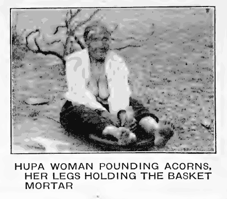
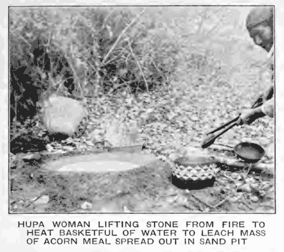
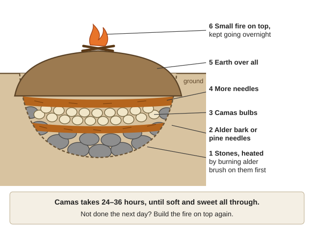
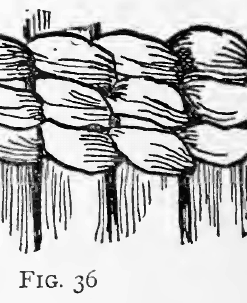
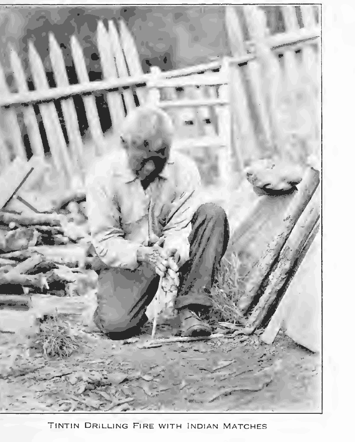

Guides › Living off the land · Emergency · Index A–Z
Skills of the Valley's First Peoples
How the peoples of this corner of Oregon and California lived well here for thousands of years, as how-to for a household with no stores: food through the year and how to keep it, fibers and baskets, houses and fire, tools, tending the land with fire, and the community ways that kept people fed and at peace. The skills come from the Takelma, whose country reached "perhaps as far west as Illinois river" (Sapir, p. 3); the Athabaskan-speaking peoples of Galice Creek and the Applegate (Sapir, p. 4); the Shasta of the upper Rogue (Kroeber, p. 344); and the Karuk, Hupa, Yurok and Tolowa to the south. No book here names the people of the upper Illinois Valley itself. These are living nations: after the wars of the 1850s the Takelma were moved to the Siletz reservation (Sapir, p. 7), and the Confederated Tribes of Siletz Indians, Confederated Tribes of Grand Ronde, Cow Creek Band of Umpqua Tribe of Indians, Karuk Tribe and Tolowa Dee-niʼ Nation still gather, weave and burn today (NRCS Beargrass, p. 4; KBO, p. 8). This guide covers everyday skills, not ceremonies. Books: Southern-Oregon\Native-Skills (new); Sapir in Southern-Oregon\Food-Security\Foraging; Goddard in Southern-Oregon\Food-From-Scratch\Wild-and-Local-Staples; Chesnut in Medical\Medicinal-Plants.
The short version
- Death camas grows with camas and the bulbs are "very nearly identical"; poisonings come in late summer, when stems are broken off (Chesnut, p. 333). Dig only plants you marked while they bloomed blue.
- Leach every acorn until sweet; tannin is "deleterious to health" (Chesnut, p. 349). Cook every elderberry (OSU, p. 4).
- Never eat raw buckeye (Chesnut, p. 384), yew or dogbane (AIB 415, pp. 50, 113), fresh iris roots (NRCS Douglas Iris, p. 1) or carrot-family roots: water hemlock kills (PNW 109, p. 1).
- Poison oak's oil is in every part, even in winter, and its smoke has put people in intensive care (OSU PNW 108, pp. 2, 4). Learn it before you gather, weave or burn.
- Most old ways of taking salmon and deer are illegal today: weirs, nets, spears, snares, dogs, fire drives (ODFW, p. 21; ODFW Big Game, p. 21). They are here so the knowledge survives.
- No burning in fire season. The Karuk burned "in the fall before it starts in to rain" (Harrington, p. 116); now burn only outside fire season, on burn days (DEQ, p. 1), small, with experienced people and a fire line (KBO, pp. 43–44).
- Never dig old village sites or graves, or carry off mortars, points or bones. Graves and sacred objects are protected on any land, and artifacts on public land (ODFW Today's Hunter, p. 33).
- Take what you need and leave the plant alive: "You never over-take anything from any of the plants and trees" (NRCS Beargrass, p. 5).
The year's round
People moved with the food: a winter house in the valley, summer camps in the hills, and stores for the cold months. Ridges ripen weeks after the river bottoms (rule of thumb).
| Season | Gather and tend | Fish and hunt | Where people lived |
|---|---|---|---|
| Spring (Mar–May) | Hazel shoots for baskets "as soon as the sap is well started" (Goddard, p. 48); mark camas while it blooms | Spring salmon "begin to run in April" (Goddard, p. 33); lamprey on "warm nights of spring" (p. 35) | Winter house |
| Early summer (Jun–Jul) | "Bulbs were dug in early summer" (Kroeber, p. 122); camas in June or July (Chesnut, p. 340); hazelnuts before the bears (Goddard, p. 39) | — | A brush shelter "built about a central fire" (Sapir, p. 13) |
| Late summer (Jul–Aug) | Manzanita berries (Chesnut, p. 393); beargrass "when the tips begin to show white" (Goddard, p. 49); seeds from the ridge prairies (Kroeber, p. 122) | Weir built for the fall run (Goddard, p. 34) | Shasta: "a roofless windbreak of brush" (Kroeber, p. 348) |
| Fall (Sep–Nov) | Acorns (Goddard, p. 37); sugar-pine nuts in October (p. 40); iris leaves (p. 45); dogbane (NRCS Indian Hemp, p. 1); tarweed (Chesnut, p. 413); evergreen huckleberries (NRCS Evergreen Huckleberry, p. 1) | Fall salmon "after the first rains in September or October" (Goddard, p. 34); deer drives (Dixon, p. 59) | Down from the high country "to over-winter below the snow line" (NRCS black oak, p. 2) |
| Winter (Dec–Feb) | Huckleberries last "until Christmas" (Goddard, p. 42); living on dried salmon, acorns, camas cakes, deer-fat cakes, dried berries (Sapir, pp. 9–11) | Elk run down on snowshoes (Dixon, p. 59) | House of split sugar-pine boards (Sapir, p. 13) |
Habits worth copying: two sparing meals a day ("Only a poor fellow without control would glut himself"), much of the work done before breakfast (Kroeber, p. 122); a dawn bath and firewood first (Goddard, p. 67).
Acorns: from tree to mush
The modern short method is "Acorn flour" in Food from Scratch; here is the local way. Which oaks: tanoak was "most esteemed" (Goddard, p. 37) and bears some crop every year, over 200 lb on one tree (NRCS tanoak, p. 1). Black oak was the Shasta's first choice, then Oregon white oak (Dixon, p. 51), whose mush is "more slimy" (p. 54) and which ripens in one year, August–November (NRCS Oregon Oak, p. 1). Canyon live oak is "poisonous when raw" and needs "more washing" (Chesnut, p. 355). How many: "some 400 or 500 pounds" was a family's "year's supply" (Chesnut, p. 348); the NRCS says 500 to 2,000 lb (tanoak, p. 1). A 150-year-old black oak gives about 100 lb in a medium crop (PSW-GTR-185, p. 16), so 500 lb is five big black oaks (arithmetic). Acorns lack protein (Chesnut, p. 347): add salmon or meat.
- Gather soon after they fall; the first drops are often "unsound because of insects, immaturity" (PSW-GTR-185, p. 16).
- Dry them in the sun ("The roof of the house is often used", Goddard, p. 37); store them "in the shell, in large baskets" under an upturned basket (Kroeber, p. 126), safe from mold and "robbing squirrels" (NRCS tanoak, p. 1).
- Shell them on a rock, tapping with a stone, and dry the meats again (Goddard, p. 37); rub off the thin inner skin by hand, a step "often overlooked" (Kroeber, p. 351).
- Pound on a flat stone set in the floor, inside a bottomless basket hopper "wider at the top and entirely open at the bottom" (Sapir, p. 9), held down by your legs over its rim; lift the pestle with the wrist turned and let it fall straight (Kroeber, p. 125). Grind to powder: oily meal won't leach otherwise (Chesnut, p. 349).
- Sift on a tilted, shallow basket; pound the coarse bits again (Goddard, p. 38).

Pounding acorns: the seated woman's legs hold the basket hopper down over its rim (Kroeber, p. 690).Leaching in a sand basin
- Scoop a saucer in clean sand and build up the rim (Goddard, p. 38). The Shasta raised theirs 6–12 in off the ground on sticks and pine needles (Dixon, p. 53).
- Spread the meal about 2 in thick (same page); lay a cedar sprig or small tule mat on top so pouring doesn't scour it (Chesnut, p. 350).
- Pour on water "nearly scalding hot", gently: "As fast as it soaks away more water is added until the material loses its bitter taste" (Goddard, p. 38); "A couple of hours are usually required" (Chesnut, p. 349). Use clean, safe water (KBO, p. 9). Taste it: done is sweet, with no bitterness or pucker.
- Slap your palm onto the drained dough, lift it, and wash the sand off its underside in warm water (Dixon, pp. 53–54). Dried, the dough stores and was traded to "the Rogue River people" (p. 54).

Leaching in sand: the meal is the pale patch in the basin; stones from the fire heat the basket of water poured over it (Kroeber, p. 117).Stone-boiling mush and baking bread
- Pick stones that "did not splinter or disintegrate when heated and suddenly cooled" (Dixon, p. 54). Never heat wet or porous river rocks; they can burst (rule of thumb). Rinse off the ash; lift them with green-wood tongs (Chesnut, p. 350).
- Dough and "a little water" in a tight basket or pot, hot stones in, then more water and stones, "vigorously stirred" (Goddard, p. 39) so they can't burn through (Kroeber, p. 125; Stone boiling). With salt "it is quite agreeable" (Goddard, p. 39).
- Bread: small cakes on a flat rock tilted toward the fire, eaten with salt (Dixon, p. 54); a loaf on leaves in an earth oven about 12 hours turns sweet (Chesnut, p. 351).
Camas and other bulbs and roots
Telling camas from death camas
- Fruit and stem: death camas has a "less rigid stem" and smaller capsules of "three nearly distinct valves"; camas has one "ellipsoidal capsule". The bulbs "are very nearly identical", and late summer, "when the stems are often broken off", is when poisonings happen; two of three cases Chesnut knew were fatal (Chesnut, p. 333).
- Death camas: bulb with "blackish scales"; V-shaped leaves "edged with stiff hairs"; stem 6–18 in; flowers "greenish to yellowish-white" in April–May (PNW 104, pp. 1–2).
- Not colour alone: great camas can be "creamy-white to deep blue-violet" (NRCS camas, p. 2), so skip every white or cream flower. Not smell: death camas bulbs "do not give off an onion-like odor", which tells them from wild onion (PNW 104, p. 2); no book here says camas smells of onion, so smell can't separate the two.
- The safe way: mark blue plants in bloom, dig them after seed set, and pull every death camas out of your beds, as the traditional camas tenders did (NRCS camas, p. 4).
 Camas in bloom: open, six-petaled flowers spaced up a tall stalk above long, narrow leaves (Saunders, p. 44). The flowers are blue (this old drawing has no color): mark the blue ones while they bloom, and dig only those.
Camas in bloom: open, six-petaled flowers spaced up a tall stalk above long, narrow leaves (Saunders, p. 44). The flowers are blue (this old drawing has no color): mark the blue ones while they bloom, and dig only those.
 Death camas: small yellowish-white flowers in a crowded cluster atop the stalk, grass-like leaves; left, meadow death camas (AIB 415, p. 35).
Death camas: small yellowish-white flowers in a crowded cluster atop the stalk, grass-like leaves; left, meadow death camas (AIB 415, p. 35).
Tending a camas bed and pit-roasting
Lift the turf in small sections, take only the larger bulbs, break up and replant the rest, put the turf back, and dig each patch "only every few years" (NRCS camas, p. 1). Replant bulblets ½–1 in deep and big bulbs 4–6 in (p. 3). A family of five needed about 2.7 ha (6.7 acres) (p. 2). The Takelma dug with a sharpened hardwood stick with a deer-horn handle (Sapir, p. 9). Raw camas is gluey and tasteless, cooked very sweet (Chesnut, p. 340), because "lengthy cooking" turns its starch to sugar (NRCS, p. 2):
- Dig a pit, fill it with alder brush with stones on top (Sapir) or line it with stones (Chesnut), and burn it until the stones are hot (Sapir, p. 9; Chesnut, p. 340; Earth oven).
- Lay alder bark or pine needles on the hot stones, then the bulbs, more needles, then earth; Chesnut's cooks kept a small fire on top overnight (same pages). Oak bark "burns slowly without flame" (Chesnut, p. 354).
- "The succeeding day, if the roots were not yet well cooked, a fire was again built" (Sapir, p. 9). Camas takes 24–36 hours (NRCS, p. 2), until soft and sweet all through (rule of thumb).
- Mash into cakes and dry them for winter (Sapir, p. 9); soak dried bulbs overnight before eating (NRCS, p. 2).

The layers from the bottom up, as Sapir and Chesnut give them; the books give no size for the pit (a diagram drawn for this guide).Other bulbs and roots
- Brodiaeas and mariposa lilies were "roasted in the ashes or boiled in baskets" (Goddard, pp. 40–41; Dixon, p. 52). Same death-camas rules.
- Soaproot, famine food only: raw, it holds "the poisonous substance sapotoxin" (Chesnut, p. 331). The Hupa pit-cooked it "for about two days" (Goddard, p. 40); baked overnight it was "a significant food to the Karuk" (NRCS Soaproot, p. 1), but Chesnut found no clear sign it was eaten in Mendocino (p. 331). Try a little first (rule of thumb). Death camas is also called "soap plant" (PNW 104, p. 1): learn the plant, not the name.
- Yampah roots taste nutty (Saunders, p. 31), but it is in the water-hemlock family: leave it to an expert. Tule rootstocks were "pounded into a kind of flour" (NRCS Tule, p. 1).
Seeds, nuts and berries
📷 Not sure what it is? Photograph it with the plant and mushroom identifier (🔧 Tools tab). It suggests names and flags poisonous groups, but it's often wrong: confirm every feature here before you eat or use anything.
Sugar-pine nuts (Sugar pine): in October families went "men and women together, to the tops of the ridges" and camped; cones were "pounded until the seeds loosen" (Goddard, p. 40). Gather fallen cones (rule of thumb). To keep them, the Shasta steamed the nuts in leaves in a covered pit of hot stones and water "for several hours", dried them, and later pounded them into cakes or mixed them with powdered salmon (Dixon, pp. 54–55).
Hazelnuts: gather "as soon as ripe, for the bears are very fond of them": June–July by Goddard (p. 39), early autumn by the NRCS, so summer into early fall. Eat them raw or roasted, pound them into cakes "with berries, meat, or animal fat", or boil them for oil (NRCS hazelnut, p. 1).
Pinole (parched seed meal): beat the seeds into a basket with a wicker beater, winnow and pick them clean, toss them with live tanoak coals in a basket tray, "constantly shaken and tossed to prevent the burning of the seeds and the basket", and grind (Goddard, p. 41). One kind at a time, with salt (Chesnut, p. 321; Pinole). For tarweed, "gathered in the fall" (Chesnut, p. 413), the Takelma first burned the stalks "to remove the pitchy substance", and ate the meal dry (Sapir, p. 10).
Manzanita: the Hupa took berries "dry and powdery" in midsummer and later, dried them on sand, pounded them in the hopper and separated the flour from the seeds (Goddard, p. 41); the Takelma mixed the flour with sugar-pine nuts and stored it (Sapir, p. 10). Cider: scald ripe, sound berries "until the seeds are soft", crush, add an equal amount of water, pour at once over dry pine needles or straw in a sieve basket and let it drain (Chesnut, p. 394); drink it within four days (NRCS manzanita, p. 2). ⚠️ Too much whole fruit can kill: "The bowels become stopped with great masses of seeds and pulp" (Chesnut, p. 394).
Huckleberries: evergreen huckleberries ripen "around October or November", "even tastier after freezing"; dry them in sun or smoke, mash, press into cakes and wrap in leaves or bark (NRCS Evergreen Huckleberry, p. 1). Elderberries: the NRCS says Native Americans ate them "raw, cook, or dry" (NRCS Blue Elderberry, p. 1); this guide follows OSU: cook every berry, never eat stems, leaves or green berries (OSU, p. 4). Others: thimbleberries, blackcaps, blackberries, currants, gooseberries (Goddard, p. 42); serviceberries dried for winter (Dixon, p. 55); salal, leaving some fruit on each plant (GTR-513, p. 76); drying: Preserving Food.
Salmon, lamprey and other fish
The Takelma took trout, steelhead, coho and Chinook, crawfish and mussels (Sapir, p. 10). On the Klamath "there is scarcely a month in the year when some variety of salmon can not be taken" (Kroeber, p. 123).
How it was done (illegal today):
- Dip net at an eddy: from a platform over a backwater, a triangle of poles held a bag net with a fan of strings across its mouth, gathered to a cord in the fisherman's hand; when a salmon shook them he lifted the net (Dixon, pp. 56–58). "A single night's vigil sometimes produced a hundred salmon [...] a winter's supply" (Kroeber, p. 123).
- Weir: "in a shallow, gravelly spot", stakes slanting downstream, a pole lashed at water level and guyed to shore with grapevines, weighted brush upstream, and "long willow fish-traps" in the gaps (Dixon, p. 56; Fishing weir). The Hupa built theirs in alternate years (Goddard, p. 34).
- Also two-pronged harpoons (Kroeber, p. 124) and bone hooks baited with crawfish (Sapir, p. 10). Never poison: "No poisons [...] were used" (Goddard, p. 36).
Drying and storing the catch:
- Skin, take off head and tail, gut, and split at the backbone (Sapir, p. 11); wipe the blood with ferns and leaves (Goddard, p. 36).
- Cut it "into three or more layers", held open with sticks (Goddard, p. 36), or roast it on split-hazel spits (Sapir, p. 11). Smoke and dry it over the fire; the Takelma "never salted" it.
- Store slabs in baskets (Kroeber, p. 123), or bone it, rub it "to powder between the hands" and pack it in leaf-lined baskets (Dixon, p. 55) or tule sacks (Kroeber, p. 352).
- Use it all: heads crushed into cakes for winter hunting trips, bones pounded for soup (Dixon, pp. 53, 55), dried eggs, "no form of food more concentrated" (Goddard, p. 36).
Dried salmon "is very hard and nearly tasteless, but rather satisfying" (Kroeber, p. 123). Dry it until brittle (rule of thumb): smoke alone doesn't keep moist fish (PNW 238, p. 1), and lightly field-smoked fish keeps "2 weeks to a month" (Fishery Leaflet 18, p. 17). Safe methods: "Fish: smoking, canning and salting" in Preserving Food.
Lamprey, slit "many times to the skin" and dried over the fire (Goddard, p. 36), are now in steep decline and tribal-permit only (PLCI, p. 1): leave them to the tribes. The law today: game fish by angling, "using a hook and line" (ODFW, p. 16); no snagging, spearing, netting, trapping or clubbing them, and salmon, steelhead and trout by day only (p. 21). Suckers and other nongame fish may be taken by hand, bow or spear; lamprey and mussels may not (p. 22). Legal gear: Hunting, Trapping & Fishing.
Deer, elk and small game
How it was done (mostly illegal today):
- Takelma deer fence: small gaps, each with a "finely spun" grass-rope snare; before daybreak men and dogs drove the deer while shoulder blades rattled over the gaps; near creeks or salt licks, with up to "one hundred and fifty" snares (Sapir, p. 11). Shasta and Takelma also made beargrass snares, used with fire (NRCS Beargrass, p. 3).
- Shasta drives: in autumn, fences with nooses in the openings; after the oak leaves fell, fire set in broken circles, with women rattling deer bones at the gap and hunters hidden in the brush (Dixon, p. 59).
- Stalking: the Shasta hunter wore a whole deerskin with head and antlers (Dixon, p. 59); the Hupa hunter hid his scent by "bathing and smoking with green fir boughs" (Goddard, p. 32).
- Trail snares "where there is but one road to the feeding ground, salt-lick, or watering place" (Goddard, p. 32); deer "seem to have been snared more often than shot" (Kroeber, p. 124). Robins were snared with twine "baited with acorns" (Goddard, p. 33).
The law today: no dogs, artificial lights, traps, snares or poison for game mammals (ODFW Big Game, p. 21); bows for deer and elk pull at least 40 lb, with unbarbed broadheads at least 7/8 in wide (p. 22). Scent control and patient stalking are still yours. More: Hunting, Trapping & Fishing.
Use the whole animal. "None of the animal was wasted": marrow bones saved, sinews kept for bowstrings, the brain dried for "dressing the hide", spare meat cut in strips and cured over a fire (Goddard, pp. 32–33); elk antler made spoons and wedges. Deer fat went into "hard dough-like cakes" for winter (Sapir, p. 11); bones were pounded for winter soup, and bear meat boiled before drying (Dixon, p. 55; trichinella: "Disease and safety" in the Hunting guide). Hides were worked soft with "deer brains and water", or the hair loosened for leather by burying the hide "in wet sand for several days" (Goddard, p. 46); full steps: "Tanning hides" in Clothing & Leather.
Sinew: take the back sinew or hind-leg tendons (the finer shank tendons make bowstrings) (Pope, pp. 11–12); dry them, pound them into fibres, wet them and twist or lay them on: "the moistened sinew is sticky and it hardens when dry" (FM 21-76, p. 151; Tendon).
Fibers, cordage and nets
Iris cord, the local net and snare fibre:
- Gather leaves "in the fall when fully mature"; plants "under oaks" beat those "under pines" (Goddard, p. 45).
- Take only the two fibres near the leaf edges, drawing the leaf past your thumb against a mussel-shell "thumbnail" (Goddard, p. 45), and scrape them "clean of all tissues" (NRCS Douglas Iris, p. 1).
- Roll them between palm and thigh into two-ply cord (Goddard, p. 45; twisting fibres).
- Expect slow work: "it takes nearly six weeks to make a rope twelve feet long" (NRCS, p. 1). An iris deer rope was "near 20 feet long" and "about half an inch in diameter" (same page). ⚠️ "Fresh iris roots may be toxic" (same page).
Dogbane: "The stems are cut in the fall; they are then split open and the long, silky fibers removed", then twisted into string (NRCS Indian Hemp, p. 1); Shasta string was "either of iris or Apocynum fibers" (Kroeber, p. 349). The leaves are poisonous "even when they are dry" (AIB 415, p. 50). Others: willow inner bark, "collected in spring", for rope (Chesnut, p. 344); fishing line of grass "rolled together by hand" (Sapir, p. 10). No book here covers nettle fibre; see "Linen, nettle and native fibers" in Clothing & Leather.
Test a new fibre: tie "an overhand knot [...] If the knot does not break, the material is usable" (FM 3-05.70, p. 201); finger-spun cord 1/32 in thick can hold "20 to 30 pounds or more" (AFH 10-644, p. 275). Nets were knotted on a mesh stick from a shuttle (Goddard, p. 46), both often elk antler, with grooved stones for weights (Kroeber, p. 124).
Baskets
The local style is twining: "Substantially the only technique is simple twining", patterns laid on top, and "Three-strand twining is customary for starts and strengthening courses", reaching north to "the Athabascan tribes on the Umpqua River" (Kroeber, p. 128; Basket weaving). The upright sticks (warps) are hazel or willow; the strands woven round them (wefts) are split root or grass (Sapir, p. 12).
| Material | Used for | When | How to prepare |
|---|---|---|---|
| Hazel shoots | Warps | Spring, "as soon as the sap is well started", from a patch burned 1–3 summers before | Peel while fresh; dry in the sun (Goddard, p. 48; Harrington, p. 161). Willow works, but insects attack it (Goddard, p. 49) |
| Pine roots | Wefts; water-tight baskets | Not given | Bury them where a fire was built; if after a night they don't split "into thin flat pieces", fire again; soak, scrape, split (Goddard, p. 49) |
| Beargrass | White pattern | Late summer, "when the tips begin to show white" (Goddard, p. 49); the summer after a burn (Harrington, p. 116) | Pull single leaves, never cut; leave flowering plants (NRCS Beargrass, pp. 3, 5); dry, braid in bundles, remove the midrib (p. 2); edges cut bare hands (p. 4) |
| Ferns | Black and red pattern | Not given | Pound maidenhair stems till the black outside shreds off; redden chain-fern strands with chewed alder bark (Goddard, p. 50) |
Harrington says hazel is cut "the second year after burning", Goddard "the second or third year": take shoots the first to third summer after a light burn (rule of thumb).
A simple twined basket, from a Karuk weaver's own account, "from the time the warp sticks were first held together" (Harrington, p. 165):
- Soak the root strands, with a bowl of water by you to wet them often (p. 167); keep the sticks wet "by letting them slip through the wet hand"; no fine work on a windy day, as "the material dries too rapidly" (Goddard, pp. 52–53).
- Start: two hazel sticks together, tips opposite; two more the same way; hold the four in your left hand and lay four more crosswise on top (Harrington, pp. 165–166).
- Lash the cross: from a corner, run a root strand diagonally across, then under; turn the bundle over and repeat until both groups lie flat and tight (pp. 167–177).
- Two-strand twining, one round, four sticks at a time: one strand passes inside, one outside, crossing between groups (pp. 177–178; Mason's drawing). To join a strand, twist old and new together once "so it will not come loose again" (p. 177).
- Three-strand twining: "I take the hindmost one all the time [...] it goes over two sticks and passes under one. Every once in a while I pull it tight" (p. 180).
- Add sticks as the bottom widens, "whenever there seems to be a gap"; chew the butt end soft so it won't back out; add most on the bottom, few once the sides start up (p. 180).
- Hold it inside-down on your thigh for the bottom, then against your knee; press each twist down with your left thumb (p. 181). Pattern: lay beargrass on the outside of the root strand and twine them as one (p. 182).
- Finish: add three-strand rounds wherever it needs strength (Kroeber, p. 128); trim the stick ends only when all weaving is done, or bend them down and wrap them with willow, as some Hupa did (Mason, p. 99).

Two-strand twining: the pair of strands gives a half twist between each upright, so one passes in front of the stick and one behind (White, p. 216).Start easy with an open-twined plate, rows "about an inch apart" (Goddard, p. 51); a close pine-root cooking basket "is water-tight and will last many years" (p. 52). Mats: "overlapping tule mats made homes well-insulated and rain-proof" (NRCS Tule, p. 1).
📚 Go deeper: Harrington, pp. 161–191 — the whole Karuk basket, with photo plates.
Houses and sweathouses
The winter house was dug in, with a plank roof:
- Takelma: split sugar-pine boards; a floor "a foot and a half to two feet below the surface", stamped smooth; corner posts and cross-beams lashed with hazel fibre; a door raised about 3 ft with an earth ramp and notched-pole ladder; a central fire and smoke-hole (Sapir, p. 13). Poorer families used pine bark (p. 14).
- Shasta: a pit about 16 by 20–23 ft, no more than 3 ft deep; the dug earth heaped as walls and lined with cedar-bark slabs; sugar-pine roof boards "split out with wedges", with eaves that "protected the earthen walls" (Dixon, pp. 44–45; metres converted, arithmetic). Copy the porch: its door "always at the extreme corner", so "all direct draught into the house was stopped"; it held firewood, nets and spears (p. 45).
- Hupa: about 20 ft square over a pit 12 ft square and 5 ft deep, cedar planks on end, a round door "closed by a plank slid from within" (Goddard, p. 23); roof planks laid double "with a good projection to carry the rain away from the walls", and poles over the fire for smoking fish and venison (p. 24).
Planks without a saw: split logs with elk-horn wedges "driven home with stone mauls" into planks "two or more feet wide and two and a half to three inches thick" (Goddard, p. 25); the wedge's edge was "produced by rubbing on stone" (Kroeber, p. 136). With steel: "Splitting and laying your own shingles and shakes" in Shelter Building. Before digging a pit house, read "Quake rules for earth walls" in Natural Building, and ditch it so winter rain runs away (rule of thumb). Summer: a brush shelter round a fire (Sapir, p. 13). Firewood: big logs that burn all night, fed small pieces (Harrington, p. 260); mix fast-burning manzanita with slow wood (Chesnut, p. 393; Firewood guide).
The sweathouse: for cleanliness and warmth
The Takelma sweathouse was partly underground and earth-covered; hot stones went in through a side hole and water was poured on them; women used "a small temporary stick structure covered over with blankets" (Sapir, p. 14). The Shasta sweat lodge was "a small hemisphere of pine bark and skins thrown over a few bent willows" (Kroeber, p. 348). To build one: bend willow poles into a dome about 5 ft high and across, cover it with blankets, put a pit of stones heated almost red-hot inside, and pour water on them. Drink "plenty of water"; "Half an hour of this is enough for most persons" (Seton, pp. 340–341; Sweat lodge). ⚠️ Keep it short, cool down slowly rather than plunging into a cold river, keep out anyone sick, pregnant or with heart trouble, and never leave a child alone in one (rule of thumb).
Making, keeping and carrying fire
Hand drill (Fire making):
- Wood: the Hupa used cottonwood root "well seasoned by hanging in the sweathouse" (Goddard, p. 48); buckeye wood also made drills (Chesnut, p. 384).
- Hearth: "about a foot long one inch wide and three fourths of an inch thick", with "Several small shallow holes" near one edge and a groove from each hole to the edge. Drill: "about fifteen inches long and one-half inch in diameter" (Goddard, p. 48). Tinder: "finely shredded cedar bast" at the groove; the Takelma carried hearth, drill and tinder in the quiver (Sapir, p. 12).
- Spin the drill between flat palms "with downward pressure" (Pope, p. 16); when your hands reach the bottom, bring them back to the top fast (rule of thumb). "Soon little glowing dust runs down the notches and ignites the prepared tinder" (Goddard, p. 48). The bow drill is easier to learn: "Fire and light without stores" in Make-Do Household (rule of thumb).

The hand drill in use: kneel over the hearth on the ground and spin the drill between flat palms, pressing down (Harrington, p. 261).Keep fire rather than make it. The Karuk drilled fire "Only once in a long time"; they kept big logs burning and carried fire: "They pack fire along in a bowl basket" with earth in it, to warm themselves where they cut wood (Harrington, p. 260). A fire bundle of "dry punk or fibrous barks (cedar) encased in a bark" carries coals, with "just enough" air to keep them burning slowly (AFH 10-644, pp. 228–229). ⚠️ Carried coals start wildfires: carry none in the dry months (rule of thumb).
Tools: bows, arrows, points, wedges and soaproot
The local bow was yew, "so thin that only the sinew backing kept it from breaking" (Kroeber, p. 127), with sinew laid "in several layers [...] over a glue consisting of steel-head salmon skin" (Sapir, p. 23). The Hupa laid it on "while the wood is green", bound it until dry, and seasoned the bow in the sweathouse (Goddard, p. 42); it was "effective for game up to fifty or seventy-five yards" (p. 43).
Ishi's way, step by step. Ishi was Yahi, from Mill Creek far south in California, not local, but Pope's account is the fullest in the library:
- Length: the stave across your chest from right hip to left hand, arm out at 45°; limbs three or four fingers wide. Season the split stave flat in a warm, sheltered place; scrape it to shape, finish with sandstone (Pope, p. 10).
- Back it: soak strips of back or hind-leg tendon in warm water for hours; glue the back (boiled salmon skin) and let it dry; chew the wet sinew "soft and pulpy" and lay it in overlapping parallel lines; bind with bark for one night; when "thoroughly dry and hard", days later, scrape it smooth (p. 11).
- Season again "for days or weeks". String: shank tendons chewed into fine threads and rolled into "a very tight, simple twist one-eighth of an inch thick", dried taut (p. 12). His bows of 44 and about 54 in pulled 40 and 45 lb; yew "produced the best weapon", and tanoak, red cedar and juniper also served (p. 10). ⚠️ Yew is "probably one of the most toxic of all poisonous plants", and children are poisoned by "the scarlet fruit" (AIB 415, p. 113). The Army's quick bow uses "Dead, dry wood" (FM 3-05.70, p. 141): a different, unbacked bow.
Arrows: Hupa shafts of syringa with a serviceberry foreshaft and three hawk feathers bound with sinew, 30–36 in long (Goddard, p. 44); Ishi used straight hazel shoots "about a yard long", peeled and seasoned in a bundle (Pope, p. 15). Straighten each bend by warming it over embers or a hot stone and pressing with the thumbs ("To burn or discolor the wood was evidence of bad technique"), smooth it between two sandstones (pp. 15–16), and set the point in heated pine resin bound with sinew (p. 22). Points: press off flakes with "a piece of antler lashed to a stick of wood about fifteen inches in length", the stone on a buckskin pad in your palm (Goddard, p. 44; Knapping). A deer point took Ishi about half an hour, and his people guarded their eyes from the flakes (Pope, p. 21): wear eye protection (rule of thumb). Use stone found loose in a creek, never from an old site. Small stone points don't meet the 7/8-in broadhead rule for deer.
Soaproot (Chlorogalum) grows "up into southwestern Oregon". The bulb was soap "for washing the body, hair, baskets, and utensils"; its fibre coat makes brush bristles, and the cooked, mashed bulb glues them to a handle and glues feathers to arrows (NRCS Soaproot, p. 1; Chesnut, pp. 331–332). Dig it after it seeds, drop the seeds back in the hole and leave some bulb (NRCS Soaproot, p. 2). Other glues: boiled salmon skin (Pope, p. 11), sturgeon glands (Goddard, p. 43), pine resin (pitch glue: Make-Do guide). Needles were bone or hardwood with an eye, threaded with sinew (Sapir, p. 12).
Tending the land with fire
"All that they used to do was to burn the brush at various places, so that some good things will grow up," says the Karuk text Harrington took down. "They do not set the fire for nothing" (Harrington, pp. 115–116; Cultural burning).
Why they burned:
- Acorns: easier gathering, fewer "diseases and [...] acorn pests", straight shoots, fewer "major conflagrations that would destroy the oaks", more seed plants (NRCS black oak, p. 2). A March burn gave "a bumper crop of sound" acorns beside unburned trees bearing unsound ones (PSW-GTR-185, p. 16). The Karuk burned under tanoaks "lest it be brushy where they pick up acorns", but not "too hard" (Harrington, p. 116).
- Basket plants: hazel burned "in summer" was cut "the second summer afterwards" (p. 115); beargrass was picked "the next summer, in July" (p. 116), its new leaves "stronger, thinner, and more pliable" (NRCS Beargrass, p. 6).
- Food, game, safety: huckleberries "grow up good" (Harrington, p. 115); oak savannas stay open, with better wildlife habitat (KBO, p. 7); and seasonal fire "can also reduce the occurrence of the larger, more destructive wildfires" (KBO, p. 7; Lake & Long, p. 7).
What fire harms: manzanita "does not come up"; tanoak "is not good when it is burned off, the tree dies"; "they are careful lest the trees burn" (Harrington, p. 117). Black and white oaks survive light fire (KBO, p. 45); hot fire kills beargrass roots (GTR-513, p. 133).
| What you tend | How often | Source |
|---|---|---|
| Oak woodland underburn | Every 3–5 years | KBO, p. 42 |
| Beargrass patch | About every 3 years; at least every 20 | NRCS Beargrass, p. 6; Lake & Long, p. 5 |
| Hazel for basket sticks | Burn, then cut the second summer | Harrington, p. 115 |
| Camas prairie | Yearly, after digging | NRCS camas, pp. 1, 4 |
| Death camas in a camas bed | Mid-spring, three years running | PNW 104, p. 2 |
When: then and now. The Karuk burned "in summer [...] when everything is dry [...] in the fall before it starts in to rain" (Harrington, p. 116); others "in the fall or early winter" (NRCS black oak, p. 2). That timing is inside today's fire season. Open burning is legal "outside of fire season [...] on burn days only"; Josephine County's burn line is 541-476-9663, and fines run "up to $12,000 per day" (DEQ, p. 1). Oak burners now go "prior to leaf out in the spring or after leaf fall in the autumn" (KBO, p. 45), and this library's rule is no open burning June–October, until real rain ("Burning on purpose: wet season only" in the Wildfire guide). So: after the fall rains or before spring green-up, on a burn day.
How to burn safely (KBO, pp. 43–44):
- Plan, get the permits, tell the neighbours; it takes "experienced personnel".
- Thin and pile the brush first, to bring fuel "to safe levels"; rake to bare soil for 2 ft around oaks, snags and logs you want to keep.
- Clear a fire line "approximately 12 to 24 inches in width" to bare mineral soil all the way round.
- Burn when "neither too dry nor too wet", never "too windy, or during an inversion"; "Start by igniting small test patches". Keep a crew with water and hand tools on the line (rule of thumb).
- Patrol "until the fire is dead out", check old stumps and duff for heat, and come back "in the hours and days following".
- Never burn poison oak: its smoke harms even people "otherwise considered immune" (OSU PNW 108, p. 4).
You owe for what your fire burns: under Yurok law a man whose hillside burn destroyed another man's hidden valuables was held liable for them (Kroeber, p. 59). The library has no numbers for a burn prescription (humidity, wind, fuel moisture). The tribes still do this work: the Karuk Tribe with the Klamath and Six Rivers National Forests (Lake & Long, p. 9), a Grand Ronde crew in oak woodland (KBO, pp. 7–8).
📚 Go deeper: Harrington, pp. 115–117 — Karuk burning in Karuk words; KBO, pp. 42–45 — prescribed fire in local oaks; NRCS Beargrass, pp. 5–6 — burning for weavers.
Community ways that worked
Share the catch. Each Shasta fish dam belonged to one family, but its owners "were obliged to give to any one who asked for them as many fish as he could carry" (Dixon, p. 56). "The single hunter always shared his game with others on his return: the chief, however, had no greater share than others"; the hunter kept the hide and legs (Dixon, p. 60). A Hupa village followed its headman "because from him they received food in time of scarcity" (Goddard, p. 68).
Clear rules and limits. Shared fishing spots went in 24-hour turns, changing "about the middle of the afternoon" (Kroeber, p. 59); no new fishing place could open below an old one, which "must have very closely restricted the total number" (p. 60); the Hupa weir went in alternate years (Goddard, p. 34). Take big camas only and rest the patch; leave some soaproot "for wildlife and future production" (NRCS Soaproot, p. 2); pull beargrass a few leaves at a time. Take no more than a third of a patch (rule of thumb).
Pay instead of fight. A Takelma man who was struck would often "keep cool" and ask for payment instead of hitting back. In serious quarrels a go-between, whose "person was deemed inviolate", carried each side's exact words until the offender paid; the injured side then gave back "a nominal present" "to cement the new friendship" (Sapir, p. 21). Among the Hupa, a respected man proposed the settlement, witnesses were called if facts were disputed, and "After the settlement is accomplished the parties must be friends" (Goddard, p. 69). Yurok law put it plainly: revenge "causes two liabilities to lie where one lay before", and once payment is accepted the claim "is irrevocably and totally extinguished. Even the harboring of a sentiment of injury is thereafter improper" (Kroeber, p. 44). Putting this to work: "Settling disputes and dealing with theft" in Community & Barter.
Trade skills and teach the children. A man could "make use of his neighbor's skill" in bow-making (Goddard, p. 42). "Children are seldom punished or handled roughly when small"; they learned from "the father and grandfather at night, and by the grandmother, the great source of wisdom, by day", and "The girl soon begins to weave little baskets" (Goddard, p. 62).
Medicine plants: go carefully
📷 Not sure what it is? Photograph it with the plant and mushroom identifier (🔧 Tools tab). It suggests names and flags poisonous groups, but it's often wrong: confirm every feature here before you eat or use anything.
The old books are full of plant remedies; almost none are tested, and some use the most poisonous plants here (death camas, iris root, dogbane, yew). This guide repeats none: read "Medicinal plants — go carefully" in Medical READ-ME-FIRST and use the Field Care guide. Bathing, soaproot soap and short sweats here are for cleanliness only.
Respect and the law
- Public land: the Forest Service and BLM keep permit lists for forest products (GTR-513, p. 17), and digging wild camas "is rarely appropriate or legal except under salvage situations" (NRCS camas, p. 3). Plant your own camas and soaproot beds (NRCS Soaproot, pp. 1–2).
- Tribal and private land: tribes already lack "access to ancestral lands" (KBO, p. 8). Ask before gathering, and don't strip a known weaving or camas site (rule of thumb).
- Village sites and graves: "Oregon law protects American Indian graves and certain sacred American Indian objects on both public and private lands. It is illegal to remove, injure, or destroy these" (ODFW Today's Hunter, p. 33). "Do not disturb" a find; report it to the Forest Service or BLM on federal land, or the State Police; for human remains call OSP at once, 800-452-7888 (p. 34; ARPA; NAGPRA). The old stone mortars found in Shasta country "are never used by the Shasta" (Kroeber, p. 349). Leave mortars, pestles and points where they lie.
- Fish, game and fire: see the law notes in the salmon, deer and burning sections. Sudden oak death rides "on tools, tires or shoes" (NRCS tanoak, p. 3): clean your gear between tanoak groves (rule of thumb).
⚠️ Old advice in the library to ignore
| Book says | Do this instead |
|---|---|
| Poison fish with crushed plants, and gather the dead "because many dead fish floating downstream could arouse suspicion" (FM 3-05.70, p. 148; FM 21-76, p. 109; soaproot: Chesnut, p. 332) | Don't. Game fish are hook and line only (ODFW, p. 21); poison kills everything in the pool, and the Hupa never did it (Goddard, p. 36). |
| Leach acorns by letting them mold, or a year in swamp mud (Kroeber, p. 126; Goddard, p. 39); red clay in acorn bread, "1 pound of clay to 20 of dough" (Chesnut, p. 351) | Clean meal, clean water, until sweet; throw out moldy acorns; don't eat clay (rule of thumb). |
| Moldy acorn meal as "a type of penicillin" on boils (NRCS tanoak, p. 2); death camas on boils; iris and dogbane "cures" (Chesnut, p. 333; NRCS Douglas Iris, p. 1; NRCS Indian Hemp, p. 2) | Don't. Wound care is in the Field Care guide; plants in Medical READ-ME-FIRST. |
| Elderberries eaten raw (NRCS Blue Elderberry, p. 1) | Always cook them (OSU, p. 4). |
| "Immediately induce vomiting" after a poison plant (PNW 104, p. 2; PNW 109, p. 5) | Vomiting is "no longer a routinely used method" (WHO, p. 155). Keep them warm, on their side if drowsy, watch breathing, keep a piece of the plant, get help ("Foraging safety rules" in Food Security). |
| Fell sugar pines for the cones (Goddard, p. 40) | Gather fallen cones (rule of thumb). |
| Fire drives; burn "when everything is dry" (Sapir, p. 11; Dixon, p. 59; Harrington, p. 116) | Small, planned burns after the rains, on burn days (KBO, pp. 43–45; DEQ, p. 1). |
| Steep arrow points in rattlesnake blood (Sapir, p. 23); glass in the eye: thump the crown of the head (Pope, p. 21) | Pointless, and an infection risk. Wear eye protection; flush an eye with clean water (Field Care guide) (rule of thumb). |
| Sweat all night, or "to break up a cold", then plunge in the cold river (Sapir, p. 14; Seton, p. 341) | Short sweats for cleanliness, plenty of water, cool down slowly; not for the sick (rule of thumb). |
Pictures & diagrams
- Acorns — leaching in a sand pit, Kroeber, p. 117; Goddard, p. 168; pounding over the hopper, Kroeber, p. 690; hopper and tray, Goddard, p. 204; acorn tools, Chesnut, p. 347
- Bulbs, seeds and berries — edible bulbs, Chesnut, p. 335; camas, NRCS, p. 1; death camas, PNW 104, p. 2; water hemlock root, PNW 109, p. 1; soaproot, Chesnut, p. 330; gathering pinole seed, Chesnut, p. 322; making manzanita cider, NRCS, p. 3; hazelnut, NRCS, p. 1
- Fish — Shasta dip net, Dixon, p. 57; in use, p. 58; salmon drying in a Yurok house, Kroeber, p. 110; hooks and spear, Goddard, p. 160; net, p. 164
- Baskets — hazel sticks, Harrington, p. 158; beargrass and bundles, pp. 159–160; weaving stages, pp. 171–173; finished basket, p. 190; pulling beargrass, NRCS, p. 3; Hupa materials, Goddard, p. 188; twining, Mason, p. 67; Hupa rim, p. 99; twining stitch, White, p. 216
- Houses, tools and fire — Shasta house plan, Dixon, p. 44; Hupa houses, Goddard, p. 116; Karuk house and Yurok sweathouse, Kroeber, p. 111; elk-horn wedges, maul and adze, Goddard, p. 120; drilling fire, Harrington, p. 261; Shasta fire drill, Dixon, p. 52; fire bundles, AFH 10-644, p. 228; bow drill, Seton, p. 215
- Bows — Hupa bows and arrows, Goddard, p. 152; Ishi's bows, Pope, p. 41; chewing sinew, heating resin, p. 49; flakers, p. 55; flaking, Goddard, p. 156
- Burning — underburn in oaks, KBO, p. 45; Grand Ronde crew, p. 7; beargrass burns, NRCS, pp. 5–6; poison oak, OSU PNW 108, p. 1
- Wikipedia — Tututni; Shasta Costa; Galice; Camas; Great camas; Beargrass; Hazel; Iris macrosiphon; Tule; Manzanita; Evergreen huckleberry; Blue elderberry; Buckeye; Pacific yew; Poison oak; Hand net; Pit-house; Plank house; Basket weaving; Bow drill; Controlled burn; Pacific lamprey
Related guides
- Food from Scratch — "Acorn flour" and "Camas, cattail and other local starches", the modern steps
- Food Security — "Wild food around the valley" and "Foraging safety rules"
- Hunting, Trapping & Fishing — legal methods, butchering, "Take the surplus, never the seed"
- Preserving Food — drying, smoking and salting fish and meat safely
- Clothing & Leather — tanning hides, moccasins, iris and nettle fibre
- Make-Do Household — the bow drill, pitch glue, soap
- Shelter Building and Natural Building — split shakes, earth walls, quake rules
- Firewood and Mushrooms — oak and tanoak, sudden oak death; the tanoak forest's mushrooms
- Wildfire — fire danger; burning only in the wet season
- Community & Barter — settling disputes, sharing the work
- Medical READ-ME-FIRST and Field Care — before any plant medicine; wounds and poisoning